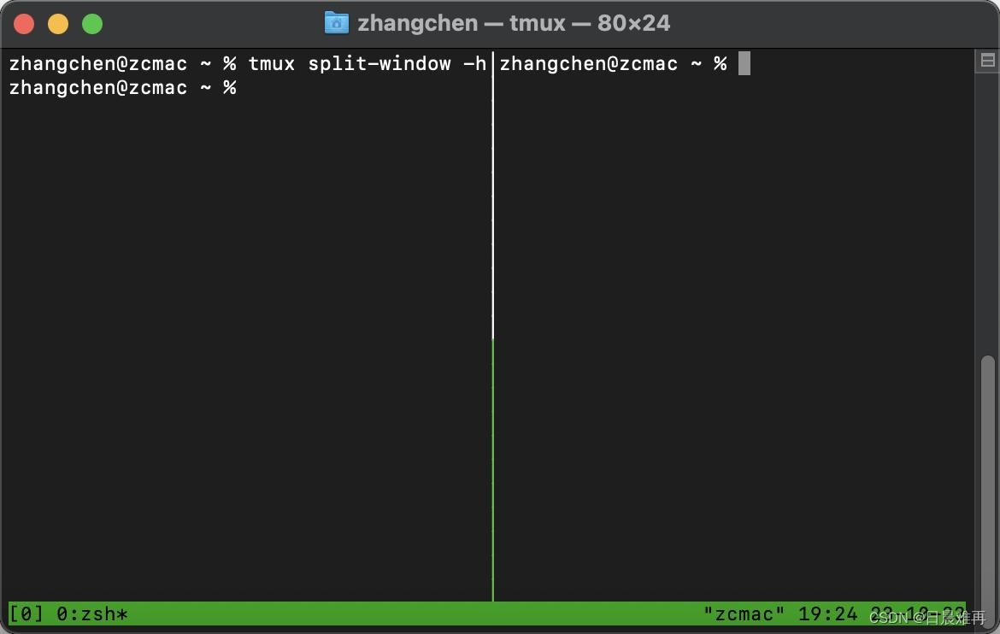

进阶用法：团队并行与自定义

01 多模型混合团队 · 并行计算
OMX_TEAM_WORKER_CLI_MAP=codex,claude,gemini omx team 3:executor "实现后台管理模块"
$ultragoal 长周期任务
支持跨天迭代的超长持久任务，自动断点续跑，无需人工值守。

$explore 只读洞察
只读模式深度分析复杂遗留项目，输出架构图与技术债报告。
$fixall 一键修复
自动扫描并修复项目所有语法错误、Lint 问题及依赖冲突。
$docs 智能文档
基于代码逻辑自动生成接口、架构与业务流程的完整文档。
项目自定义配置 (AGENTS.md)：在项目根目录创建该文件，定义技术栈与编码规范，OMX Agent 将严格遵循并执行。

终端级并行执行能力
通过类 Tmux 的多窗格并行机制，实现多个 AI Agent 同时处理不同子任务，充分释放多核算力与多模型的协同优势，开发效率呈指数级倍增。